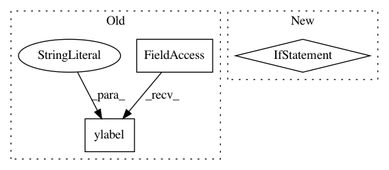

5196910e726c04648f5cffae5f50ecd3171539ce,neurodsp/plts/filt.py,,plot_frequency_response,#Any#Any#Any#,11
Before Change
plt.subplot(1, 2, 1)
plt.plot(w_vals * fs / (2. * np.pi), 20 * np.log10(abs(h_vals)), "k")
plt.title("Frequency response")
plt.ylabel("Attenuation (dB)")
plt.xlabel("Frequency (Hz)")
// Plot filter kernel, if available
if isinstance(a_vals, int):
After Change
Figure axes upon which to plot.
if not ax:
_, ax = plt.subplots(figsize=(5, 5))
ax.plot(f_db, db, "k")
ax.set_title("Frequency response")
ax.set_xlabel("Frequency (Hz)")
In pattern: SUPERPATTERN
Frequency: 3
Non-data size: 3
Instances
Project Name: neurodsp-tools/neurodsp
Commit Name: 5196910e726c04648f5cffae5f50ecd3171539ce
Time: 2019-03-17
Author: tdonoghue@ucsd.edu
File Name: neurodsp/plts/filt.py
Class Name:
Method Name: plot_frequency_response
Project Name: scikit-optimize/scikit-optimize
Commit Name: 4a8d1ffcf12287d632fb25ef484344d68d987818
Time: 2016-07-20
Author: g.louppe@gmail.com
File Name: skopt/plots.py
Class Name:
Method Name: plot_convergence
Project Name: tensorlayer/tensorlayer
Commit Name: 16a31e2c9fedc654e9117b42b8144adf1d0e4900
Time: 2020-02-03
Author: 34995488+Tokarev-TT-33@users.noreply.github.com
File Name: examples/reinforcement_learning/tutorial_A3C.py
Class Name:
Method Name: